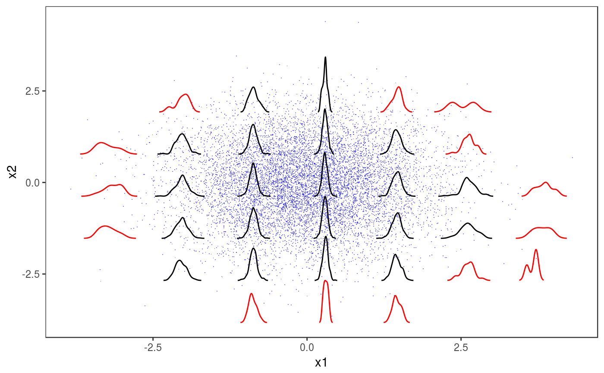
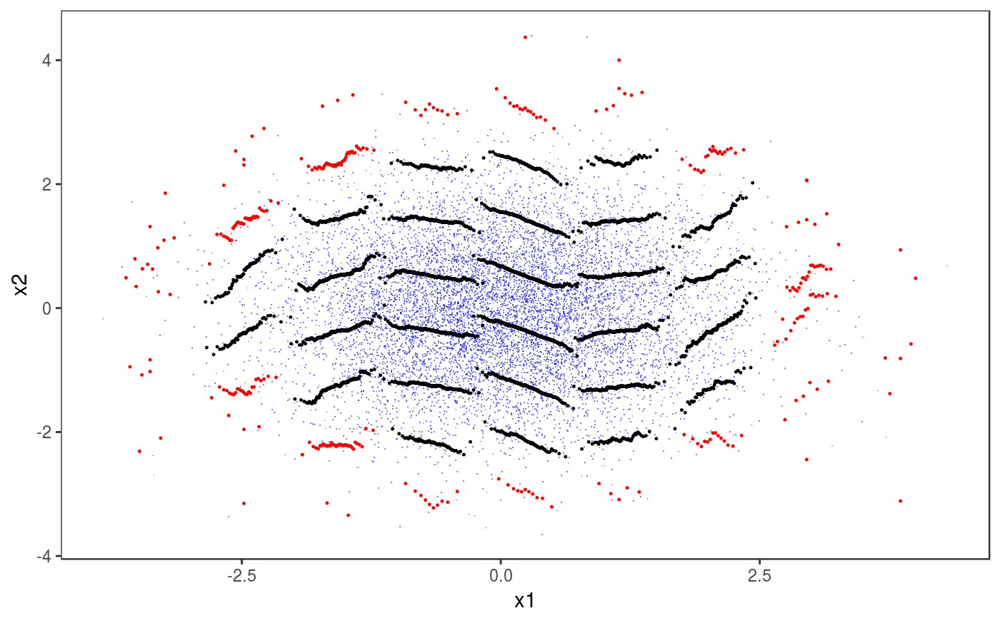

This layer adds glyphs or subplots to 2D plots. It is mainly meant to be used with check2D and to produce residuals checks.
l_glyphs2D(glyFun, ggLay = "geom_points", n = c(4, 4), mapping = NULL, data = NULL, polar = FALSE, height = ggplot2::rel(0.95), width = ggplot2::rel(0.95), y_scale = I, x_scale = I, ...)
| glyFun | the function that produces the data needed to construct the glyphs.
It will take a single argument ( |
|---|---|
| ggLay | the |
| n | vector of two positive integers, indicating the number of 2D grid cell along x and y in which the data is divided. |
| mapping | list of aesthetic mappings to be used by |
| data | an optional data.frame to be used for computing the glyphs.
It must have two variables called |
| polar, height, width, y_scale, x_scale | see GGally::glyphs. |
| ... | graphical arguments to be passed to |
An object of class gamLayer.
library(mgcViz); set.seed(4124) n <- 1e4 dat <- data.frame("x1" = rnorm(n), "x2" = rnorm(n)) # Residuals are heteroscedastic w.r.t. x1 dat$y <- (dat$x1)^2 + (dat$x2)^2 + (1*abs(dat$x1) + 1) * rnorm(n) b <- bam(y ~ s(x1,k=30) + s(x2, k=30), data = dat, discrete = TRUE) b <- getViz(b) pl <- check2D(b, x1 = "x1", x2 = "x2", type = "tnormal") + l_points(colour = "blue", alpha = 0.5) # Look at distributions of residuals across x1 and x2 # Approach 1: using binned kernel density estimate # Colour indicates whether we have more that 50 obs in that bin glyFun <- function(.d){ .r <- .d$z .qq <- as.data.frame( density(.r)[c("x", "y")], n = 100 ) .qq$colour <- rep(ifelse(length(.r)>50, "black", "red"), nrow(.qq)) return( .qq ) } pl + l_glyphs2D(glyFun = glyFun, ggLay = "geom_path", n = c(8, 8), mapping = aes(x=gx, y=gy, group = gid, colour = I(colour)), height=1.5, width = 1)# Approach 2: using binned worm-plots. These are simply rotated QQplots. # An horizontal plot indicates well specified residual model. # Increasing (decreasing) worm indicates over (under) dispersion glyFun <- function(.d){ n <- nrow(.d) px <- qnorm( (1:n - 0.5)/(n) ) py <- sort( .d$z ) clr <- if(n > 50) { "black" } else { "red" } clr <- rep(clr, n) return( data.frame("x" = px, "y" = py - px, "colour" = clr)) } pl + l_glyphs2D(glyFun = glyFun, ggLay = "geom_point", n = c(10, 10), mapping = aes(x=gx, y=gy, group = gid, colour = I(colour)), height=2, width = 1, size = 0.2)